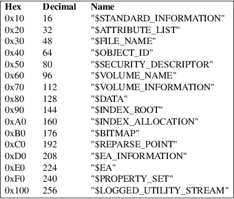

ntfstruncate − truncate a file on an NTFS volume
ntfstruncate [options] device file [attr-type [attr-name]] new-length
ntfstruncate truncates (or extends) a specified attribute belonging to a file or directory, to a specified length.
Below is a
summary of all the options that ntfstruncate accepts.
Nearly all options have two equivalent names. The short name
is preceded by − and the long name is preceded
by −−. Any single letter options, that
don’t take an argument, can be combined into a single
command, e.g. −fv is equivalent to −f
−v. Long named options can be abbreviated to any
unique prefix of their name.
−f, −−force
This will override some sensible defaults, such as not using a mounted volume. Use this option with caution.
−h, −−help
Show a list of options with a brief description of each one.
|
−l |
Display licensing information. |
−n, −−no-action
Simulate the truncation without actually write to device.
−q, −−quiet
Suppress some debug/warning/error messages.
−v, −−verbose
Display more debug/warning/error messages.
−V, −−version
Show the version number, copyright and license of ntfstruncate.
attr-type
Define a particular attribute type to be truncated (advanced use only). By default, the unnamed $DATA attribute (the contents of a plain file) will be truncated. The attribute has to be specified by a number in decimal or hexadecimal :

attr-name
Define the name of the particular attribute type to be truncated (advanced use only).
new-length
Specify the target size of the file. It will be rounded up to a multiple of the cluster size. A suffix of K, M, G, T, P or E may be appended to mean a multiplicative factor of a power of 1000. Similarly a suffix of Ki, Mi, Gi, Ti, Pi or Ei may be appended to mean a multiplicative factor of a power of 1024.
Resize to 100MB the file database.db located in the Data directory which is at the root of an NTFS file system.
ntfstruncate /dev/sda1 Data/database.db 100M
There are no
known problems with ntfstruncate. If you find a bug,
please send an email describing the problem to the
development team:
ntfs−3g−devel@lists.sf.net
ntfstruncate was written by Anton Altaparmakov.
ntfstruncate
is part of the ntfs-3g package and is available from:
https://github.com/tuxera/ntfs-3g/wiki/
ntfs-3g(8), ntfsfallocate(8), ntfsprogs(8).